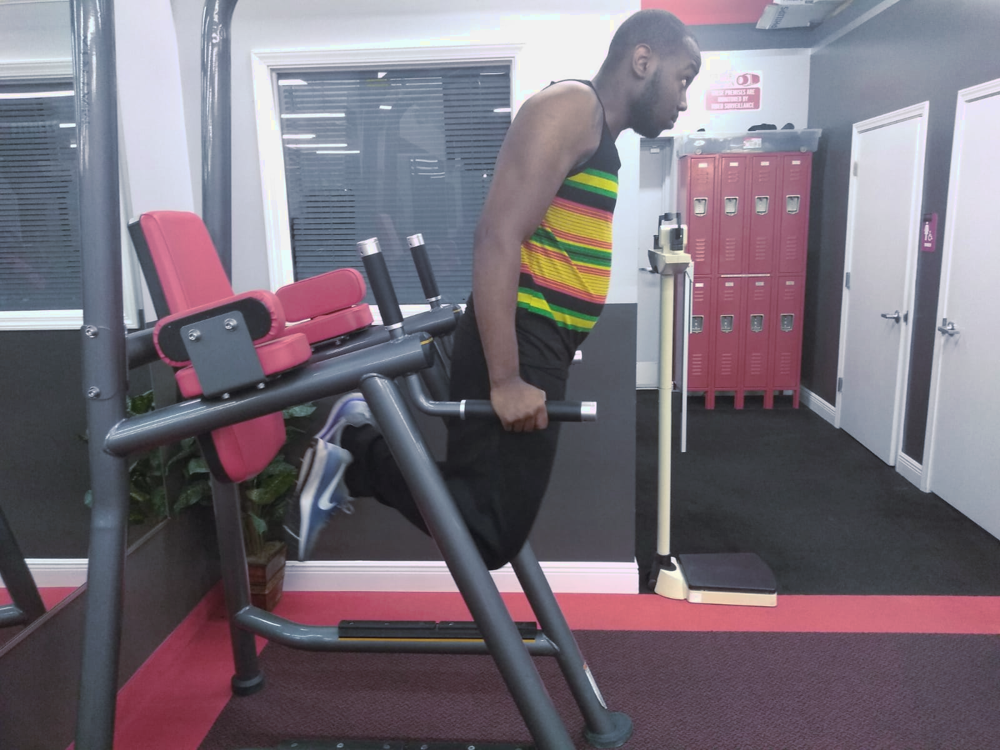
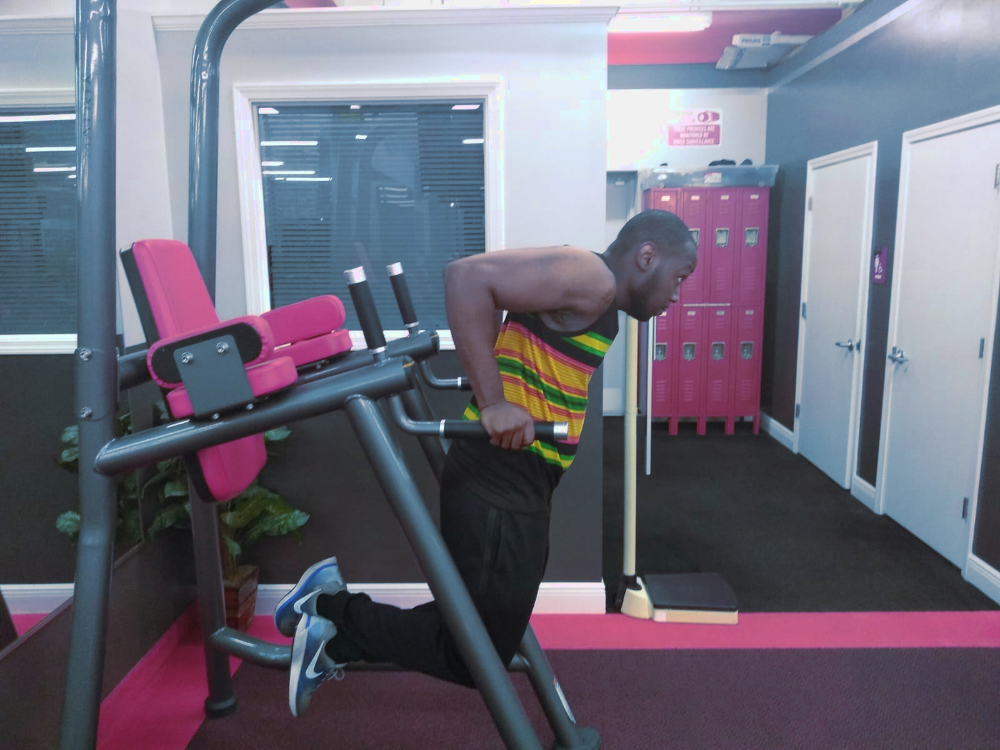
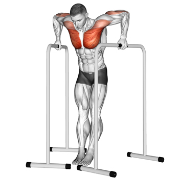
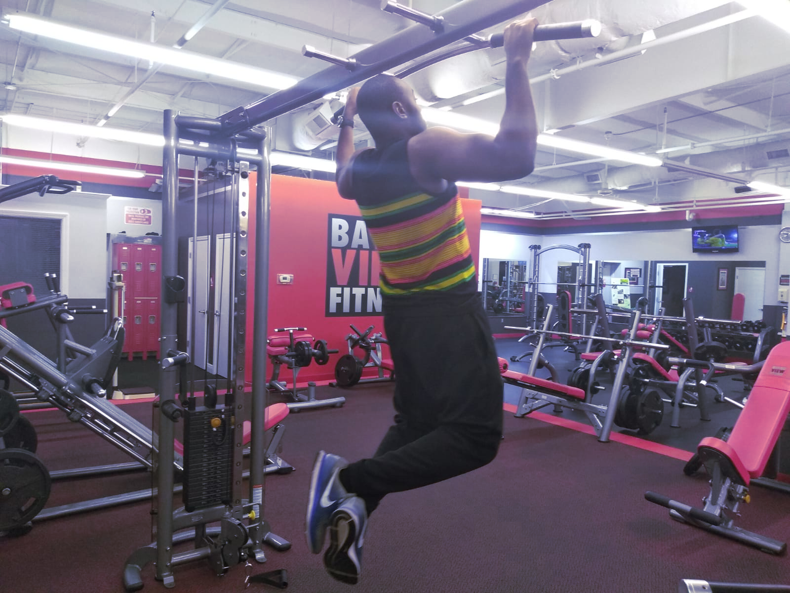
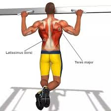
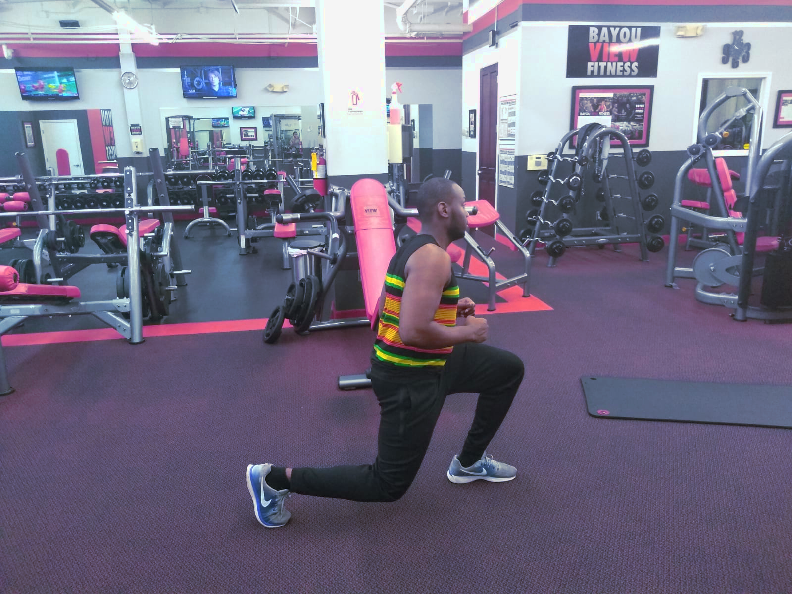
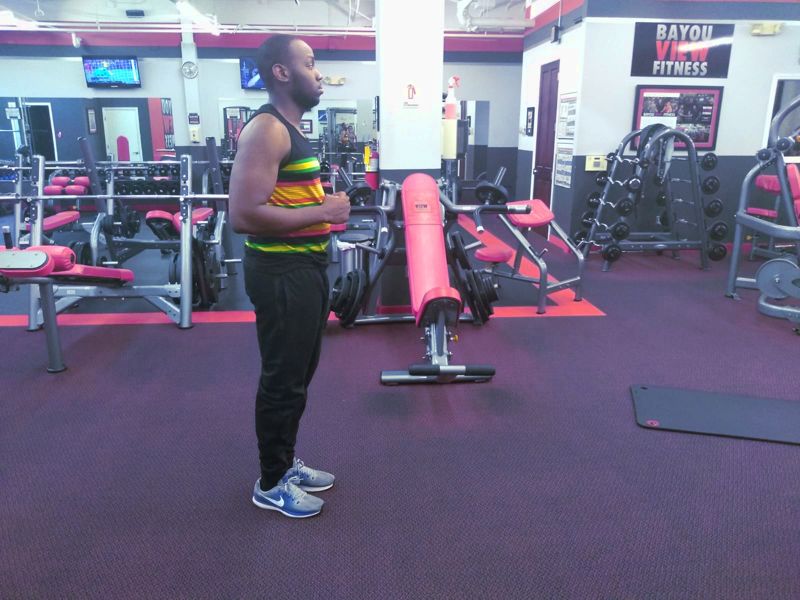
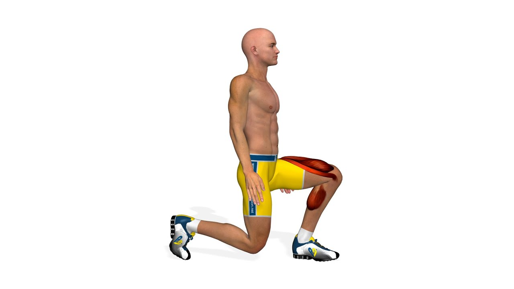

Best Body Exercises
Chest Workout



Dips primarily trains the triceps and chest which leads to a stronger lift on hte bench press.
Back Workout



Pull Ups primarily trains the back and biceps which leads to a stronger lift on the barbell row.
Leg Workout



Lunges primarily trains the thigh and calves which leads to a stronger lift for the squat machine.